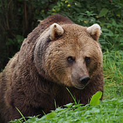

The brown bear (Ursus arctos) is a large bear with the widest distribution of any living ursid.[2] The species
is distributed across much of northern Eurasia and North America. It is one of the two largest terrestrial
carnivorans alive today, rivaled in body size only by its close cousin, the polar bear (Ursus maritimus),
which is much less variable in size and averages larger due to this. There are several recognized subspecies,
many of which are quite well-known within their native ranges, found in the brown bear species.
Fig0. - A view of a bear in Beijing Zoo.
Features
Brown bears are not always completely brown. Some can be reddish or yellowish. They have very large, curved
claws and huge paws. Male brown bears are often 30% larger than female brown bears. They can range from
5 feet to 9 feet from head to toe.

Fig1. - A view of a .cute bear
Where Brown Bears lurks
Brown bears were once native to much of Asia, some parts of the Atlas Mountains of Africa and perhaps most
of Europe and North America, but are now extinct in some areas, and their populations have greatly decreased
in other areas. There are approximately 200,000 brown bears left in the world. The largest populations
are in Russia with 120,000, the United States with 32,500, and Canada with around 25,000.The brown bear
currently occurs in the countries of Afghanistan, Albania, Andorra (recently reoccupied), Armenia, Azerbaijan,
Belarus, Bhutan (possibly extinct), Bosnia and Herzegovina, Bulgaria, Canada, China, Croatia, Czech Republic
(possibly only vagrants), Estonia, Finland, France, Georgia, Greece, India, Iran, Iraq, Italy, Japan,
Kazakhstan, Kyrgyzstan, Latvia (extinct before World War II; possibly vagrants from Estonia or Russia
after World War II), Republic of Macedonia, Mongolia, Montenegro, Nepal, North Korea, Norway, Pakistan,
Poland, Romania, Russia, Serbia, Slovakia, Slovenia, Spain, Sweden, Tajikistan, Turkey, Turkmenistan,
Ukraine, the United States, and Uzbekistan.